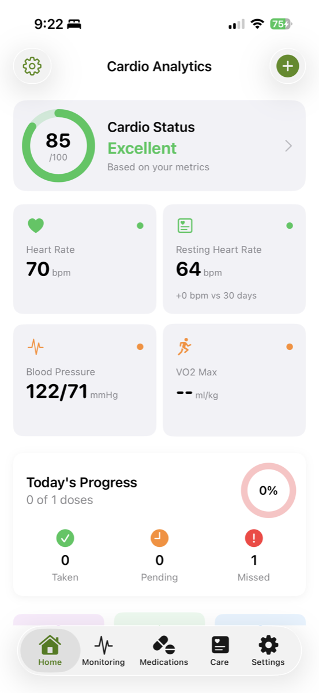

Stebėkite širdies sveikatą su pasitikėjimu
Stebėkite 11 širdies ir kraujagyslių bei judumo rodiklių iš Apple Health. Širdies ritmas, kraujospūdis, HRV, SpO₂, EKG, VO₂ Max ir daugiau. iOS programa, kurioje privatumas yra svarbiausias, su pilnu duomenų apdorojimu įrenginyje.
⚠️ Cardio Analytics neteikia medicininės diagnozės. Visada konsultuokitės su kvalifikuotu klinicistu.

Visapusiškas širdies ir kraujagyslių bei judumo stebėjimas
Vieningas prietaisų skydelis visiems širdies sveikatos ir judumo duomenims iš Apple HealthKit
Širdies ritmas
Stebėkite ramybės, ėjimo ir dabartinį širdies ritmą su normalių verčių rodikliais (60-100 tvpm). Nustatykite bradikardiją ir tachikardiją.
Kraujospūdis
Sekite sistolinį ir diastolinį kraujo spaudimą su AHA kategorijų klasifikavimu. Stebėkite hipertenzijos riziką ir bendrą širdies ir kraujagyslių sveikatą.
Širdies ritmo kintamumas
Sekite SDNN ir RMSSD rodiklius streso lygiui ir širdies ir kraujagyslių sveikatai įvertinti. Žemas HRV susijęs su prastesniais sveikatos rezultatais.
Deguonies prisotinimas
Stebėkite SpO₂ lygius su normalių verčių rodikliais (95-100%). Gaukite įspėjimus apie hipoksiją ir sekite kvėpavimo bei širdies ir kraujagyslių sveikatą.
Svoris ir KMI
Sekite svorį ir kūno masės indeksą (KMI) su sveikų verčių rodikliais (18,5-24,9 kg/m²). Stebėkite širdies ir kraujagyslių rizikos veiksnius laikui bėgant.
EKG ir prieširdžių virpėjimas
Išsaugokite FDA patvirtintus Apple Watch EKG įrašus. Sekite prieširdžių virpėjimo naštą ir netaisyklingo ritmo pranešimus su 95% jautrumu ir specifiškumu.
VO₂ Max
Stebėkite širdies ir plaučių pajėgumą – galingą mirtingumo rizikos prognozės rodiklį. Sekite tendencijas laikui bėgant ir analizuokite treniruotės zonas.
Ėjimo greitis
Sekite "šeštąjį gyvybinį ženklą" funkcinei sveikatai. Ėjimo greitis žemiau 0,8 m/s rodo didesnę riziką. Stebėkite funkcinį pajėgumą laikui bėgant.
Ėjimo asimetrija
Įvertinkite ėjimo pusiausvyrą ir kritimo riziką su patvirtintais Apple Mobility rodikliais, skirta išsamiam funkcinės sveikatos stebėjimui.
Laiptų kopimo greitis
Stebėkite funkcinį pajėgumą ir kojų raumenų jėgą su laiptų kopimo rodikliais. Anksti nustatykite reikšmingą judumo pablogėjimą.
HealthKit integracija
Patirkite sklandžią sinchronizaciją su Apple Health. Automatinis foninių atnaujinimų, efektyvus duomenų užklausų vykdymas ir rašymo galimybės.
Viskas, ko reikia širdies sveikatos stebėjimui
Profesionalaus lygio širdies ir kraujagyslių analizė, sukurta pacientų įgalinimui
Personalizuotas prietaisų skydelis
Matysite visus 11 rodiklių viename ekrane. Aiškios tendencijos, gairių diapazonai ir personalizuoti slenkstiniai lygiai. Stebėkite pokyčius akimirksniu.
Vaistų sekimas
Užregistruokite dozę arba sinchronizuokite su HealthKit vaistais. Sekite laikymąsi režimo. Vizualizuokite koreliaciją su kraujospūdžiu, širdies ritmu, HRV ir svoriu.
Įrodymais pagrįsti įspėjimai
Slenkstiniai lygiai, atitinkantys AHA, Mayo Clinic, Cleveland Clinic rekomendacijas. Personalizuokite pagal savo gydytojo rekomendacijas.
Simptomų ir valdymo centras
Užregistruokite simptomus su sunkumo įvertinimu. Sekite valdymo tikslus ir vizitus pas gydytojus. Eksportuokite profesionalias ataskaitas gydytojams.
Privatumas pagal dizainą
Detalus HealthKit leidimas. Visi duomenys saugomi vietiškai įrenginyje. Jūs sprendžiate, kuo dalytis.
Dalijamosios ataskaitos
Eksportuokite profesionalius PDF arba CSV klinicistams. Visa sveikatos istorija viename dokumente.
Sklandžia HealthKit integracija
Automatinė sinchronizacija su Apple Health lengvam širdies ir kraujagyslių stebėjimui
Suteikite HealthKit leidimą
Suteikite leidimą skaityti širdies ir kraujagyslių rodiklius iš Apple Health. Detalus kontrolė, kokio tipo duomenimis dalytis.
Automatinė foninė sinchronizacija
Cardio Analytics naudoja pritvirtintas užklausas ir foninį perdavimą, kad duomenys būtų naujausi, nenaudojant baterijos.
Sekite tendencijas ir gaukite įspėjimus
Stebėkite tendencijas, gaukite įrodymais pagrįstus įspėjimus, registruokite vaistus ir simptomus, dalykitės ataskaitomis su klinicistais.
Įrodymais pagrįsti širdies ir kraujagyslių rodikliai
Visi rodikliai paremti tarpusavio peržiūros tyrimais ir klinikinėmis gairėmis
Klinikinės gairės
AHA kraujospūdžio kategorijos, Mayo Clinic širdies ritmo/SpO₂ diapazonai, Cleveland Clinic HRV tyrimai.
Tarpusavio peržiūros tyrimai
NEJM Apple Heart Study, JACC prieširdžių virpėjimo metaanalizė, PLOS ONE VO₂ patvirtinimas, JAMA ėjimo greičio tyrimai.
FDA patvirtinti įrenginiai
Apple Watch EKG ir netaisyklingo ritmo pranešimai yra FDA patvirtinti prieširdžių virpėjimo nustatymui.
Pradėkite valdyti širdies sveikatą šiandien
Atsisiųskite Cardio Analytics ir stebėkite savo širdies ir kraujagyslių sveikatą su išsamiu, privatumu pagrįstu stebėjimu. Visi širdies sveikatos duomenys vienoje vietoje.
Atsisiųsti iš App Store⚠️ Cardio Analytics neteikia medicininės diagnozės ar gydymo. Dėl medicininių patarimų visada konsultuokitės su kvalifikuotu klinicistu.